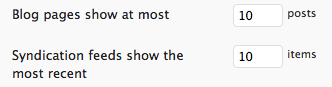

Template info
Thank you for purchasing our theme. If you have any questions that are beyond the scope of this help file, please feel free to email via our user page contact form here. Thanks so much!
Support is completely voluntary for ThemeForest authors -- you are buying the product as is. The support on this theme is provided, but in limited amount. We just don't have time to help you with major modifications etc. for free, but if you are experiencing any kind of problem with installing or using this theme, please feel free to contact us via contact box on our ThemeForest profile.
Please don't post any questions regarding support to ThemeForest's comments, We can easily loose track of them and forget to reply you. Again, We don't have time to browse through all those comments every day. We hope you will understand it. So if you use that contact box on our profile page, it will be just fine.
Please note that you have to be logged in to see that contact box. If you like our work, you can follow us on ThemeForest by clicking here
Files included
- Main theme archive
- Dummy content XML file
- 10 PSD's
- PDF help guide
Sources and credits
This is a list of the images, icons and other resources we've used in this theme:
- jQuery Cycle plugin
- PrettyPhoto jQuery plugin
- jQuery Validation plugin
- jQuery Easing
- jQuery Isotope
- Update Notifier by Joao Araujo
- Google+ icon by Spaksu
- Vector Social Media Icons by IconDock.com
- All the fonts made available through the use of our panel are freely available and loaded from Google Fonts and are not included in the theme package.
What's new?
Version 1.0 - May 02, 2012
- Initial release
Installation and configuration
To install this theme, simply follow these steps:
- Install WordPress
- Install the theme
- Activate the theme
- Install the optional plugins
- Additional configurations for TimThumb and dummy content import
Installing WordPress
If you have not set up your WordPress installation yet, you can grab a copy of latest WordPress version here. Next, go through the installation instructions inside readme.html file and set up your WordPress installation. If you are new to WordPress and have problems installing it you might want to check out this link: http://codex.wordpress.org/Installing_WordPress
Installing the theme
You can either choose to upload the theme to your server via FTP (only upload the unzipped folder "TEMPLATE" into the folder wp-content/themes/ ) or using the WordPress upload function. To use the upload function of the WordPress admin panel make sure to ONLY upload the "TEMPLATE" folder and not the whole archive file that you received from Themeforest. If you are new to WordPress and have problems with theme you might want to check out this link: http://codex.wordpress.org/Using_Themes
Activating the theme
Activate the "Metropolis" theme by selecting the Appearance -> Theme tab and then activate
Install the optional plugins
For a better experience of use, there are a plugin we warmly suggest to install:
Dummy content
This theme comes with the option to add dummy content to it, to make it look almost like the live preview that can be found on ThemeForest.
To use this feature go through Tools -> Import and click on "WordPress". If this is your first import you'll need to install the WordPress Importer plugin (see image).
Now you can choose the file included in the main zip file under the folder "dummy content" called "Metropolis dummy content.xml" and click "Upload file and Import".
Remember that using the dummy content is not mandatory, still you may find it useful as it contains all the posts, tags, categories, menus and some theme settings from the live preview.
It doesn't contain sidebar widgets, footer widgets and images.
After importing sample content you still have to configure the theme and to manually create some things like the footer and the sidebars.
Once you're done, you can take a look how things are set up and use the dummy content as a starting point for your own content. That should make it much easier for you to use the theme, especially if you are new to WordPress.
WordPress reading settings
In the administration panel, go to Settings > Reading. Here you can configure how many posts you want to display in your Blog, Search and Archive pages.

Appearance
You can customize Metropolis's appearance in several different ways, that make up for a very large number of possibilities.
Style
The "Style" page lets you customize the appearance of your website, from colors to typography.
Let's dig deeper and analyze the tabs of the "Style customizer" page.
General
Here you can set the website's optional custom CSS. Please remember that any rule you write in your custom CSS box will override any other rule previously declared.
Colors
The "highlight color" is the color of your links and highlighted parts. If left empty, links and other element will be set to the default color.
Typography
The "Typography" tab lets you choose the fonts for the different sections of your website.
Customizing them is pretty easy: for each area, choose your font family and a combination of weight (Normal, Bold), style (Normal or Italic) size (a number, without the "px" part) and color. You can also set the font line-height value.
Upon the selection of the font family, the preview will change according to your selection, and please note that the preview only demonstrates the font family, the weight and the style, not its color.
Note: not every font have the bold weight or an italic version, you need to refer to Google Web Fonts website reference and check the font supports. This doesn't stop you to use the italic style variant even when the selected font doesn't actually offer support for it, although the outcome won't be optimal.
Background
The "Background" tab lets you choose the color and pattern backgrounds for the website.
With "Background overlay pattern" you can choose the overlay pattern for the background or simply disable it by choosing "no pattern".
You can upload your custom background image using the upload on "Background" option and change the main site color with the "What's your site's background color?" option.
Note: the background image will be overwritten by a slideshow if activated, and on the single work page or if you have set a featured image on a page.
Creating the navigation menus
This template supports WordPress 3.0+ custom menu feature.
There are two main navigation areas in this template, the main top navigation, with multi level navigation support and a small "one level" navigation in footer. You can take advantage of these areas by simply creating a menu named "Primary" for the main top navigation and another one called "Secondary" for the footer nav.
For more info on WordPress custom menu feature check video tutorial below: http://youtu.be/SjI33oCcCwk.
Sidebars
This template supports WordPress sidebars.
There are 2 pre-configured sidebars, with a total of 5 widget areas. To make use of widgets you can easily go to Appearance -> Widget, choose your widget, and drag it and drop it on the intended widget area.
The pre-configured sidebars are the following:
- Main sidebar
- Footer sidebar
The footer sidebar is divided into 4 widget areas representing the footer's 4 columns.
To choose a sidebar for a page, look out for the Sidebar metabox in the page editing interface. You can also choose to place your sidebar on the right or on the left, setting the appropriate option in the "Sidebars" tab of our admin panel.
Please note that only pages with the default template, sidebar on the left template and sidebar on the right template and contact templates will feature such box. Also, when explicitly selecting not to load any sidebar with the option "- NO SIDEBAR", the page/entry will automatically take the full width available.

When using a page template different to the ones listed above, hence using a page layout that is related to a specific custom post type, you'll be able to control the presence of the sidebar in the "Sidebars" tab of Metropolis's main options page.
Dynamic sidebars
Metropolis comes with the ability to create an unlimited number of sidebars to use in your theme, besides the default ones already included.
To create a custom sidebar, go to the Metropolis's "Sidebars" option page. Clicking the "Add" button on top will make a new sidebar panel appear where it'll be possible to insert the description of the sidebar. Clicking the "Remove" button in the bottom right corner of the panel will instead delete the sidebar.
All the changes will take effect upon pressing the "Save" button.
Slideshow
Managing an home page slideshow is now easier than ever. To completely control your slideshow, go to the "Slideshow" tab in Metropolis's main options page.
Here you can pick from different options, concerning how many slides to show, the amount of time between each slide, and the transition effect from one to another. You can also specify which effect your captions will have.
The slides composing the slideshow can essentially be of two types, either showing recent entries from the Blog or Works sections, or displaying a custom set of pictures and videos; you can set this in the "Home page" tab of the main options page.
Activating the slideshow
To add a slideshow to your home page, simply activate it in the "Home page" tab of Metropolis general options page.
You can also set a slideshow to appear in individual posts, works and pages (this is also the case with static home pages). To do that, pick a slideshow from the "Background/slideshow" option of the post/work/page editing interface. Selecting "Entry slideshow" will expand the Slideshow metabox, that allows the upload of up to five slides.
Dimensions
A quick note about slideshow dimensions. The slideshow can be either boxed or extended. When extended, you can make it a full screen background by setting the "Slideshow height" option to 0.
The "Slide caption height", on the other hand, will control how tall the caption box will be.
Custom slides
To manage your custom collection of slides, go to the "Slideshow" Metropolis's option page. Upon clicking the "Add" button, a panel is presented to you with the ability to choose the type of the slide, being it Picture or Video.
When choosing "Picture" from the "Type" select element:
- Upload a new picture, or pick an existing one from the Media Gallery by clicking the "Upload" button.
- Select a Title for your picture (optional)
- If you want the title to be clickable, enter the destination URL (optional)
- You can also enter a brief caption of the picture (optional)
Otherwise, selecting "Video":
- Select a Title for your video (optional)
- Enter the full URL of the video, with it being from either YouTube or Vimeo
Page templates
This theme comes with several page templates:
- Archives
- Blog
- Blog w/ big thumbnails
- Blog w/ image on top
- Contact
- Page w/ left sidebar
- Page w/ right sidebar
- Portfolio 2 columns
- Portfolio 3 columns
- Portfolio 4 columns
- Testimonials quote
- Testimonials bubble
Template custom post types
Works
You need to create a page for the portfolio, so go on Pages -> "add new" and create a page with the "Portfolio page" page template. This custom page template will display all the Works custom post type entries.
The Works custom post type comes with a custom taxonomy named Type; each type of work inserted corresponds to a menu voice in the Portfolio page filter menu.
The Works custom post type also supports videos. If you want to link to a video, paste its URL in the 'Video URL' custom field. Besides this, you can overwrite the video thumbnail, shown on "Portfolio" page, uploading your new one using "Work video replacement thumbnail image" field. You also have the ability to replace the video thumbnail as background uploading a new image using WordPress "featured image" feature.
Template widgets
The theme comes with a collection of custom widgets:
- Latest posts
- Page
- Posts from a category
- Popular posts
- Custom tag cloud
- Contact details
- Social networks
- Flickr
- Latest works
- Map
- Testimonials
- Single testimonial
Latest posts
This widget shows your latest posts. All you have to change is the title of the widget, the default title is "Latest posts", and how many posts you want to display. There are also a couple of options to show the post thumbnail or to cut the excerpt if you want to use this widget on footer.
Page
This widget shows the content of the selected page.
Posts from a category
This widget shows your latest posts belonging to the selected category. All you have to change is the title of the widget, with the default being the title of the category, and how many posts you want to display. There are also an option to show the post thumbnail.
Popular posts
This widget shows your popular posts. All you have to change is the title of the widget and how many posts you want to display. There are also an option to show the post thumbnail.
Contact details
This widget uses the contact information that you insert in the Metropolis -> Contact section of custom admin panel. All you have to change is the title of the widget. The default title is "Contact us"
Social networks
This widget simply shows all of your social networks. Insert your social user name under the Metropolis -> Social section of our custom admin panel.
Flickr
This widget shows your last Flickr photos; you need to insert your Flickr ID and the number of images displayed. For information about your Flickr ID follow this link.
This widget show your last tweets, you need to insert your twitter username and how many tweet you want to display. You have also an optional title for the widget.
Latest works
This widget shows your lastest works. All you have to change is the title of the widget, the default title is "Latest works", and how many works you want to display and if you want to display the work thumbnail.
Shortcodes
This template comes with a variety of shortcodes for layout and content formatting. These short-codes include basic layout columns, tabs, accordions, content toggles, information boxes and buttons.
Attention: Please make sure to always enter a line break before and after the shortcode. Most of the time you won't encounter any errors if you don't, but unfortunatley WordPress does mess up the HTML sometimes.
Here's a list of all shortcodes included:
Typography
- h1
- h2
- h3
- h4
- h5
- medium text size
- code
- cite
- highlight
- acronym
- deleted text
Utilities
- divider
- icon boxes
- icon boxes centered
Buttons
- small
- medium
- large
Columns
- 1/3
- 2/3
- 1/4
- 2/4
- 3/4
- 1/5
- 2/5
- 3/5
- 4/5
Other interface elements
- tabs
- accordion
- toggle item
- YouTube/Vimeo video
- Widget icon
- Map
Social
- Social
- Flickr
Shortcode usage
- [h1], [h2], [h3], [h4], [h5]
- [h1]Header text[/h1]
- [medium], [code], [cite], [highlight], [acronym], [del], [quote], [pullquote], [divider]
-
[medium]Your content[/medium]
[code]Your code[/code]
[acronym title="Cascading Style Sheets"]CSS[/acronym]
[cite author="Author name" link="author website"]Text[/cite]
[divider] - [iconbox]
- The icon box shortcode parameters are: center, iconsize, url and title. [iconbox center url="image url" iconsize="64" title="Title"]descriptive text[/iconbox] If you set "center" parameter iconsize is not required.
- [button-small], [button-medium], [buttom-large]
- Colors available are Red, Green, Blue, Yellow, Graphite, Grey, Purple and Brown. You can also use the link="" attribute to add a URL to your button, "http://" will be automatically added. [button-small color="red" link="www.google.com"]button text[/button-small]
- [one-third], [two-third], [one-fourth], [two-fourth], [three-fourth], [one-fifth], [two-fifth], [three-fifth], [four-fifth]
- [one-third]Your content here[/one-third] There's also a special class "last" for the last column in a row, Eg. [one-third]Your content[/one-third] [two-third last]Your content[/two-third]
- [tabs], [tab]
- Clicking on Tabs -> Tab container you'll create a simple 2 tabs structure can you easily modify. The Tabs -> Single tab button create a single tab that you can insert into your tab structure. Here a simple tab shortcode structure: [tabs][tab title="tab title"]Tab content[/tab] [tab title="tab title"]Tab content[/tab][/tabs]
- [accordion], [nested-accordion]
- You have two type of accordion, simple and nested. Here a simple accordion structure: [accordion title="Title example"]Content of accordion[/accordion] [accordion title="Title example 2"]Content of accordion 2[/accordion]. If you need a nested accordion you need to replace accordion content with your nested-accordion shortcode. [accordion title="Title example"] [nested-accordion title="Title example"]Content of accordion[/nested-accordion] [nested-accordion title="Title example 2"]Content of accordion 2[/nested-accordion]??[/accordion] [accordion title="Title example 2"]Content of accordion 2[/accordion]. Use the "first_element_opened" attribute to have the toggle opened by default.
- [toggle], [buttom-large]
- Here an example of the toggle shortcode structure: [toggle title="title"]Toggle content[/toggle]. Use the "open" attribute to have the toggle opened by default.
- [video]
- Here an example of the video shortcode structure: [video id="Insert the video URL here"] This shortcode supports both Youtube and Vimeo embedding, the only thing you need is the video url. Eg. [video id="http://www.youtube.com/watch?v=4K39UWxdm0U"]
- [icon]
- Here an example of the icon shortcode: [icon url="your image url"]. This shortcode adds the ability to insert an icon on a text widget, you can use this for create something like a services promo widget, you can use an external or a local icon.
- [pricingtable]
-
This shortcode adds a pricing table columns structure to the page. You can control the columns number with the
colsparameters: [pricingtable cols="3"] Each plan can be generated with the following shortcode: [plan color="" head_color="" title="Starter" price="FREE" price_tag="" button_url="http://www.google.com" button_text="sign up" button_color="grey"]Plan contents[/plan] Plans can be "featured": just add the "featured" attribute to the plan shortcode. - [thb_map]
- Here an example of the icon shortcode: [thb_map title="" latlong="10,10" zoom="10", height="200" width="300"]. This shortcode adds the ability to insert a map in your page, based on your contact information.
- [thb_social]
- Here an example of the icon shortcode: [thb_social]. This shortcode displays the social icons of the services you've set a username for.
- [thb_twitter]
- Here an example of the icon shortcode: [thb_twitter twitter_id="thehappybit" twitter_count="3"]. This shortcode displays your latest tweets.
- [thb_flickr]
- Here an example of the icon shortcode: [thb_flickr flickr_id="50614773@N07" flickr_count="3"]. This shortcode displays your latest photos from your Flickr stream.
- [thb_page]
- Here an example of the page shortcode: [thb_page]. This shortcode adds the ability to insert a page content in your text.
- [thb_latest_posts]
- Here an example of the latest posts shortcode: [thb_latest_posts numposts="3" showthumb="1"]. This shortcode displays your latest posts from your blog.
- [thb_popular_posts]
- Here an example of the popular posts shortcode: [thb_popular_posts title="" numposts="3" showthumb="1"]. This shortcode displays the popular posts from your blog.
- [thb_category_posts]
- Here an example of the category posts shortcode: [thb_category_posts title="" numposts="3" showthumb="1" cat="2"]. This shortcode displays posts from your blog belonging to a specific category.
- [thb_latest_works]
- Here an example of the latest works shortcode: [thb_latest_works numposts="3" showthumb="1"]. This shortcode displays your latest works from your portfolio.
- [thb_testimonials]
- Here's an example of the testimonials shortcode: [thb_testimonials id="" items="3" style="1" title=""] The shortcode displays the latest testimonials.
Thanks!
Once again, thank you so much for purchasing this theme. As we said at the beginning, we'd be glad to help you if you have any questions relating to this theme. No guarantees, but we'll do our best to assist. If you have a more general question relating to the themes on ThemeForest, you might consider visiting the forums and asking your question in the "Item Discussion" section.